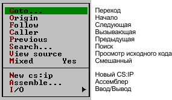

1. ЦЕЛЬ РАБОТЫ
Изучение механизма передачи управления в программе; получение практических навыков отладки разветвляющихся программ.
2. РЕКОМЕНДУЕМАЯ ЛИТЕРАТУРА
2.1. Абель П. Язык Ассемблера для IBM PC и программирования /Пер. c англ. М.:Высш. шк., 1992,c 93-115.
2.2. Белецкий Я. Энциклопедия языка Си: Пер. c польск.-М.:Мир,1992,с 394-406.
3. ПОДГОТОВКА К РАБОТЕ
3.1. Изучить методические указания.
3.2. Подготовить ответы на контрольные вопросы.
3.3. Проанализировать приведенную ниже программу CHANGE, дополнить каждую команду комментарием.
3.4. Ввести свой собственный текст на английском языке, содержащий строчные и заглавные буквы.
3.5. Изменить программу так, чтобы в соответствии с вариантом задания (Таб. 5.1.) она обеспечивала:
Таблица 5.1.
|
№ |
Заменить |
|
1 |
а) ‘a’ на ‘A’ б) все заглавные строчными |
|
2 |
а) строчные от ‘a’ до ‘f’ заглавными б) все заглавные строчными |
|
3 |
а) строчные ‘b’и’c’ заглавными б) все заглавные строчными |
|
4 |
а) строчные от ‘f’ до’z’ заглавными б) все заглавные строчными |
|
5 |
а) символ ’( ’ на символ ‘) ’ б) все заглавные строчными |
|
6 |
а) ‘Z’ на ‘z’ б) все заглавные строчными |
|
7 |
а) символ ’/ ’ на символ ‘\ ’ б) все заглавные строчными |
|
8 |
а) ‘a’ на ‘A’ б) все заглавные строчными |
|
9 |
а) строчные от ‘a’ до ‘f’ заглавными б) все заглавные строчными |
|
0 |
а) строчные ‘b’и’c’ заглавными б) все заглавные строчными |
4. КОНТРОЛЬНЫЕ ВОПРОСЫ
4.1. Назовите три типа команды безусловного перехода.
4.2. Какой может быть длина перехода в разных типах команды JMP?
4.3. Содержимое каких регистров модифицируется при выполнении безусловных переходов разных типов?
4.4. Какова максимальная длина условного перехода?
4.5. Каким образом может быть указан адрес перехода?
4.6. Какие флаги могут быть использованы в командах условного перехода после выполнения команды сложения?
4.7. Приведите возможные команды условных переходов, если после сравнения беззнаковых чисел D1иD2 оказалось: а)D1=D2, б) D1£ D2 , в) D1>D2.
4.8. Приведите возможные команды условных переходов, если после сравнения чисел со знаками P1иP2 оказалось: а) Р1 ¹Р2, б) Р1<Р2, в) Р1 ³ Р2.
4.9. Какие команды могут использоваться для организации циклов?
4.10. Какова максимальная длина переходов при организации циклов?
4.11. Какие признаки, кроме СХ=0, могут быть использованы при организации циклов?
4.12. Как осуществляется переход к процедурам разных типов?
4.13. Назовите варианты команды возврата из процедуры.
5. ПОРЯДОК ВЫПОЛНЕНИЯ РАБОТЫ
Ниже приведена программа CHANGE, которая в заданной текстовой строке заменяет латинские строчные буквы заглавными.
Коды строчных и заглавных букв английского алфавита можно найти в Таблице кодировки символов (Приложение, с 23).
5.1. Введите программу, используя текстовый редактор. Оттранслируйте и скомпонуйте программу в режимах TASM/ZI, TLINK/V.
5.2. Загрузите отладчик и программу. Произведите ее пошаговое выполнение. Наблюдайте результаты выполнения команд.
5.3. Установите ловушку на одной из команд подпрограммы. В точке останова отройте в окне CPU локальное меню и выберите пункт CALLER. Пронаблюдайте исполнение этой инструкции.
5.4. Пронаблюдайте результат выполнения программы в окне WINDOW (режим USER SCREEN).
5.5. Введите вариант программы из домашнего задания, обеспечивающий замену заглавных букв строчными.
5.6. Убедитесь в работоспособности второго варианта программы.
6. ПРИМЕР ПРОГРАММЫ
TITLE CHANGE - ЗАМЕНА СТРОЧНЫХ БУКВ ЗАГЛАВНЫМИ;---------------------------------------------------------DATASG SEGMENT PARAMYTEXT DB 'Our Native Town',13,10,'$'DATASG ENDS STACKSG SEGMENT 'Stack' DB 12 DUP(?)STACKSG ENDS CODESG SEGMENT PARA 'Code'BEGIN PROC FARASSUME SS:STACKSG,CS:CODESG,DS:DATASG PUSH DS SUB AX,AX PUSH AX MOV AX,DATASG MOV DS,AX LEA BX,MYTEXT MOV CX,10HMT1: MOV AH,[BX] CMP AH,61H JB MT2 CMP AH,7AH JA MT2 CALL CORMT2: INC BX LOOP MT1 LEA DX,MYTEXT MOV AH,09H INT 21H RETBEGIN ENDPCOR PROC NEAR NOP AND AH,0DFH MOV [BX],AH RETCOR ENDPCODESG ENDSEND BEGIN
7. КРАТКАЯ ИНФОРМАЦИЯ О РАБОТЕ ТУРБО ОТЛАДЧИКА
Там, где это возможно, команды JMP и CALL выводятся в символическом виде. Если CS:IP указывают на команду JMP или команду условного перехода, то стрелка (стрелка вверх или вниз), показывающая направление перехода, будет выводиться только в том случае, если выполнение команды приведет к переходу.
Для перехода в локальное меню области Code окна CPU нужно нажать клавиши Alt-F10.
Локальное меню имеет вид:

Команда Follow (Следующая) позиционирует по целевому адресу подсвеченной в данный момент инструкции. Область кода позиционируется заново, чтобы вывести код по адресу, указанному в подсвеченной в данный момент инструкции, по которому будет передано управление. Для условных переходов адрес показывается в случае выполнения перехода. Эту команду можно использовать с инструкциями CALL, JMP, инструкциями условных переходов и инструкциями INT.
Команда Previous (Предыдущий) восстанавливает область кода в то состояние (позицию), которое она имела до выполнения команды Follow.
Команда Caller (Вызывающая программа) позиционирует вас на инструкцию, по которой была вызвана текущая подпрограмма или прерывание.
Данная команда будет работать не всегда. Если процедура обработки прерывания или подпрограмма занесла в стек элементы данных, иногда Турбо отладчик не может определить, откуда был выполнен вызов.
Команда Previous (Предыдущий) восстанавливает область кода в то состояние (позицию), которое она имела до выполнения команды Caller.